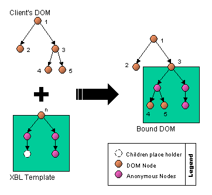

Table of Contents
- 4. Shadow
Content
- 4.1. Rules for Shadow Content Generation
- 4.2. Rules for Shadow Content Destruction
- 4.3. Attribute Forwarding
- 4.4.
Processing
contentElements - 4.5. The Final Flattened Tree
- 4.6. Handling DOM Changes
- 4.7. Shadow Content and CSS
- 4.8.
Shadow Content and
xml:base - 4.9. Shadow Content and Other Things
- 4.10. Binding Style Sheets
- 6. Event Handlers
4. Shadow Content
The subtree that is rendered in the document, but is not accessible from
the document via standard Core DOM navigation facilities such as
firstChild or nextSibling is called
shadow tree.
An element declared in a document using a single element can then be constructed out of multiple elements in its shadow subtre, and this implementation is hidden from the document.
An element can only have one shadow tree. If an element has a shadow tree, it is called a shadow host.
Any explicit children of the shadow host element are combined by the user agent into a flattened tree for the purposes of rendering and hit-testing.
A shadow tree can be specified in two ways:
- with a shadow content template.
- by building the tree with Core DOM methods during the binding phase.
The term shadow content refers to the various nodes in the shadow tree of a host element.
The subtree specified by the template element is referred to as the
shadow content template. This
template describes a subtree that will be generated under the host
element during the binding phase.
For example, the HTML file upload control appears in most browsers as a composite widget consisting of a text field and a button. A sample template for the file widget might look as follows:
<template> <input type="text"/> <input type="button"/> </template>
Because this content is not visible to its parent element, it is said to be shadow content.
The file control is actually a special case. Due to security considerations, untrusted bindings will typically not be able to extend the file upload control in UAs intended for use with untrusted content.
4.1. Rules for Shadow Content Generation
When a shadow tree is generated, user agents must act as follows:
If the binding element has no template element, then no shadow content
will be generated for this binding.
Otherwise, its first template
element must be deeply cloned.
The xml:base data of the cloned template element must be set so that the
baseURI of nodes in the resulting shadow tree is the same as
their pre-cloning counterparts. All shadow nodes'
ownerDocument pointers are left pointing at their binding
documents' Document node(s).
No mutation events must be fired during the above steps.
Any bindings that apply to elements in the shadow tree must be applied.
For bindings with implementations: the shadowTree member of the internal object must be set to be a reference
to the template element clone (the
root of the shadow tree).
The shadow tree is then applied to the bound
element: the binding's shadow tree is placed in the appropriate place in
the final flattened tree, explicit
children are (re)distributed to the appropriate content elements, and the CSS cascade and
inheritance is be computed along the new tree. (See: processing content elements.)
After this point, further bindings may need to be applied, or certain bindings may need to be removed (because of CSS inheritance or because the selectors that decide which elements match which bindings can be affected by the shadow tree being associated with the bound element).
Everything described in this section must be completed atomically — that is, the UA must not execute author scripts during this process.
Some implementations might optimize this algorithm, such as using "lazy evaluation" approaches and thereby postpone the cascade and inheritance operations.
4.2. Rules for Shadow Content Destruction
The destruction of a shadow tree consists of recreating the final flattened tree without the
influence of that binding's shadow tree by redistributing the explicit children to the remaining shadow
trees' content elements (or, if there
are none, putting the nodes back directly under the bound element).
The shadowTree member of the internal object must be set to null.
4.3. Attribute Forwarding
Attributes on shadow content elements can be tied to attributes on the
bound element; then, whenever the attribute is set or removed on the bound
element, the corresponding attribute on the shadow content is also set or
removed. On any shadow content element, an attributes attribute can be used to
specify a space-separated list
of attributes that should be inherited. Attributes with namespaces can be
defined using a namespace prefix and the attribute name separate by a
colon.
For example, returning to the HTML file upload control example above,
the shadow text field can be set up to automatically inherit the
value attribute from the bound element.
<binding id="fileUploadControl">
<template>
<input type="text" attributes="value"/>
<input type="button" value="Browse..."/>
</template>
</binding>
Each entry in the attributes list can either simply list an
attribute name (a string, such as value in the example above,
containing no spaces, colons, asterisks, or hash marks),
or it can specify an =-separated pair of attribute names
(ditto), consisting of the attribute on the shadow content that should be
tied to the attribute on the bound element. When two names are specified,
the attribute to be added on the shadow content node is listed first, and
the attribute of the bound element is second.
Each entry may also be suffixed by a single hash mark (#) followed by a type designation.
The attributes attribute's value must be
parsed as follows. First, it must be split on spaces (treated as a space-separated
value). Next, each resulting item must be matched against the attributes-item production in the following ABNF:
attributes-item := attribute [ '=' attribute ] [ '#' type ] attribute := *attribute-character / special-attribute attribute-character := < any character but ':', '=', '#', or '*' > special-attribute := '*text' / '*lang' type := '#' ( 'url' / 'text' )
If any item does not match this pattern, then the item is in error and must be ignored. Other items in the list, if any, are not affected by this.
The values pseudo
and attributes, if used such that they match
the attribute production of the above ABNF, are in error and must be ignored.
4.3.1. Forwarding to and from text nodes
The special value *text can be used in
an =-separated pair.
When specified on the left-hand side of the pair it indicates that the value of the attribute on the right-hand side are to be represented as text nodes underneath the shadow element in the final flattened tree. If the element has any child nodes in the DOM (any nodes, including comment nodes, whitespace text nodes, or even empty CDATA nodes) then the pair is in error and UAs must ignore it, meaning the attribute value is not forwarded. Otherwise, a text node must be created, and that text node will be placed under the element in the final flattened tree.
Text nodes created in this way are orphans; their
parentNode, nextSibling,
previousSibling, childNodes,
firstChild, and lastChild attributes are all
null or empty. Their ownerDocument attribute is set to the
same as the shadow content node that generated them. (The only way one of
these text nodes can be accessed is if the element is itself bound: the
text node might then appear in a content element's xblChildNodes list.)
When used on the right-hand side, it indicates that any text nodes (including CDATA nodes and whitespace text nodes) that are explicit children of the bound element must have their data concatenated and the resulting value stored as the attribute on the left-hand side.
4.3.2. Forwarding language metadata
The special value *lang can also be used
in an =-separated pair.
When used on the right-hand side, it indicates that the value to be
copied is the natural language of the bound element, typically given by
the attribute lang of that element or an
ancestor, or by HTTP headers, or similar. If no language is defined, then
the value to be copied must be the empty string.
The *lang value cannot occur by itself
or on the left-hand side. If it does, it is in
error and UAs must ignore that value in the
element's attributes attribute.
4.3.3. Error handling
If an attribute is listed multiple times on the left hand side (or on its own), then the last designation wins (as if the attributes were each forwarded in turn, an earlier forwarding being overwritten by a later one), and all the ones before the first are in error.
4.3.4. Type specifiers
If the attribute or attribute pair is followed by a type designation, in the form of a hash mark character ("#") and by a type name, then the value must be processed as described for its type below before being forwarded.
- If the type is
url - The value must be resolved to an absolute URI using the base URI of the source element before being forwarded.
- If the type is
text(default) - The value is forwarded unchanged.
- If the type is any other value
- The attribute must not be forwarded. The value is in error and UAs must ignore
that value in the element's
attributesattribute.
In the following shadow template, the "src" attribute on the bound
element is forwarded to the "src" attribute on the image
element in the shadow tree, and the link will work even if the original
attribute had a relative URI and the base URIs of the various nodes are
different:
<template>
<>img attributes="src#url title alt=*text lang=*lang"/>
</template>
This example also shows how to turn the value of an attribute on the
bound element, in this case the "alt" attribute, into child nodes of the
element in the shadow tree, using *text.
For accessibility reasons, the language of the element is also explicitly
forwarded.
4.3.5. Dynamic changes
The attributes attribute must be parsed when
the binding is first applied and whenever the attribute's value changes.
It must be applied (causing the relevant attributes and text nodes to be
updated) when the shadow tree is generated, when the attribute is changed,
and whenever any of the bound element's attributes or text nodes referred
to by the attributes attribute change.
4.3.6. How Attribute Forwarding Affects the Shadow Tree
The element to which the attributes are forwarded (that is, the element
with the attributes attribute specified) has its
attributes mutated. Whenever attribute forwarding happens: existing
attributes to which values are being forwarded must have their values
changed, attributes that are being forwarded that do not yet exist on the
shadow tree element must be added to the shadow tree element, attributes
to which values would be forwarded but whose source attributes are not
present on the bound element must be removed from the shadow tree element.
The shadow tree element's attributes can be changed dynamically, and
this doesn't affect the attribute forwarding, until dynamic changes cause
attribute forwarding to be performed again. When attribute forwarding is
performed, all attributes are forwarded, even those that haven't changed
on the bound element, thus blowing away any dynamic changes to the shadow
tree element's attributes that are referenced by the attributes
attribute.
4.4. Processing content
Elements
A node is said to match a content
element when the content element has
no includes attribute, or when the
element in question matches the selector given by that includes
attribute.
If an element stops matching a content element that it is assigned to,
then the bound element's explicit chlidren must be redistributed.
4.4.1. How Nodes are Distributed
XBL bindings can
interleave shadow content between bound elements and their explicit children. They do so using XBL's content element. Any number of content nodes may be used in a binding's
shadow content template.
In addition, the shadow trees of inherited bindings get inserted into
the first inherited element in the
binding.
The explicit children of an element are
the nodes that are listed in the element's childNodes array,
with the exception that any content
elements in that array are instead replaced by whatever nodes they
currently have assigned to them, or, if no nodes are assigned to that content element, by the child nodes of
that content element. If an element's
childNodes list is empty but the element has an attributes
attribute that uses the *text value on
the left hand side in a way that is not in error
then its "explicit children" is the text node generated during attribute forwarding.
Consider the following simple document:
<X xmlns="http://example.com/"><A/></X>
Now, if the element X in that document is bound to a binding with the following shadow tree template:
<template xmlns:T="http://example.com/"> <my:T> <my:P/> <content/> <my:Q/> </my:T> </template>
The explicit children of the T element, ignoring
whitespace nodes, are, in order, P, A, and
Q. This is because the children of T are
P, a content element,
and Q, and the content
element has just one node associated with it, namely the A
element.
When the explicit children are
distributed and assigned to the content elements in the bound element's
shadow trees, the includes attribute determines which
content element a given child is to be
placed under.
If no includes attribute is specified, a
content element is considered generic
and will match on all content, including text nodes, CDATA nodes,
comments, and so on.
If the includes attribute is specified, it
must be interpreted as a selector, and only elements
that match the selector apply to that content element. If the selector is
invalid, the content element is in error and does not match any nodes. Matching of
the elements to the selector is done without taking into account the
shadow tree in which the content
element itself is found. [SELECTORS]
Each node that is to be distributed (each explicit child node) must be assigned to a
content element as follows:
- If the node is already assigned to a
contentelement for this binding, and thecontentelement is locked, then that is thecontentelement to which the node must be assigned, stop here. - Otherwise: if the node is already assigned to a
contentelement for this binding, unassign it. - Let T be the shadow tree of the most derived binding with a shadow tree for the bound element.
- If T contains a correct
contentelement that is not locked and to which the node in question applies, then the first such element in a depth-first, pre-order traversal of the shadow tree T is thecontentelement to which the node must be assigned, stop here. - Otherwise, if this binding has no correct
inheritedelement in its shadow tree, then the node is not assigned to acontentelement, and does not appear in the final flattened tree; stop here. - Otherwise, if the binding has a correct
inheritedelement in its shadow tree but it is the least derived binding with a shadow tree, then the node is not assigned to acontentelement, and does not appear in the final flattened tree; stop here. - Otherwise, let T be the shadow tree of the next most derived binding with a shadow tree and return to step 4.
The explicit children must be processed
in order, so if two nodes are assigned to a content element, their order in the xblChildNodes list is the same as
their relative order in the explicit
children list.
Consider the following simple document:
<X xmlns="http://example.com/"><A/><B/><C/></X>
Imagine that the element X in that document is bound to a binding with the following shadow tree template:
<template xmlns:my="http://example.com/"> <my:T> <my:M/> <content/> <my:N/> </my:T> </template>
Imagine further that the element T is itself bound to a binding with the following template:
<template xmlns:my="http://example.com/"> <my:R> <content includes="N"/> <content includes="B"/> </my:R> </template>
The resulting final flattened tree would be:
X
|
`-- T
|
`-- R
|
+-- N
|
`-- B
In this example, there are two selectors, "N" and "B", both of which match just elements with the given local name.
4.4.2. When Nodes Are Redistributed
The algorithm described in the previous section is applied when:
- A shadow tree is generated.
- A shadow tree is destroyed and the bound element still has bindings with shadow trees.
- The bound element has explicit children added, removed, or moved.
- A shadow
tree is modified in a way that affects the relative order of
contentelements or theirincludesattributes. - An
includesattribute in the shadow tree is mutated. - One or more of the nodes assigned to a
contentelement in a shadow tree no longer match the element'sincludesattribute.
Consider the following binding shadow tree:
<template> <div>As: <content includes="A, AA"></content></div> <div>Other: <content></content></div> </template>
If an element is bound to this binding while it has three child
elements A, AA, and B, then the A and AA elements would end up under the
first content element, and the B
element would end up under the second content element. But if the includes
attribute of the first content
element in the shadow tree was then dynamically modified to just have the
value "A", then the AA element would be reassigned
to the second content element.
4.5. The Final Flattened Tree
The final flattened tree is the view of the document and shadow trees after XBL has been fully applied. It is only used for two things:
- Rendering
- Rendering must be performed using the final flattened tree. Nodes that do not appear in the final flattened tree must not be rendered. (See: CSS property inheritance and rendering.)
- Event dispatch
- Events flow along the final flattened tree. (See: event flow and targeting across shadow scopes.)
All other processing continues to use the DOM Core tree. (See: shadow content and other things.)
The final flattened tree must be constructed by taking the bound document's core DOM tree and performing the equivalent of the following steps on each bound element, until there are no more bound elements in the tree that have not been processed:
- If the bound element has no shadow trees, move on to the next bound element.
- Otherwise, replace the child nodes of the bound element with the child
nodes of the most derived shadow tree's root
templateelement. - For any element in the shadow tree that has an
attributesattribute that uses the*textvalue on the left hand side in a way that is not in error, let the element's only child node be the attribute-forwarding text node. (If the element in question has any child nodes, then the*textvalue will be in error.) - Replace any
contentelements in the shadow tree with the nodes that were assigned to them in the previous section, unless there are no such nodes, in which case replace them with their child nodes. - Replace the second and subsequent
inheritedelements in the shadow tree with their child nodes. - Replace the first
inheritedelement in the shadow tree, if any, with the child nodes of the next most derived binding's shadow tree's roottemplateelement, or, if there is no less-derived binding with a shadow tree, with the child nodes of theinheritedelement itself. - If the previous step added a shadow tree to the flattened tree, then return to step 3 to deal with that newly added shadow tree. Otherwise, move on to the next bound element.
Imagine the following document fragment:
... <my:A xmlns:my="http://example.com/"> <my:B> <my:C/> <my:D/> </my:B> </my:A> ...
...is bound to the following XBL:
...
<binding element="B" xmlns="http://www.w3.org/1999/xhtml">
<template xmlns:my="http://example.com/">
<my:P>
<my:Q>
<content includes="C">
<my:R/>
</content>
<my:/Q>
<content includes="D">
<my:S/>
</content>
<my:/P>
</template>
</binding>
<binding element="Q">
<template>
<my:X>
<my:Y>
<content>
<my:Z1/>
</content>
<content>
<my:Z2/>
</content>
<my:/Y>
<my:/X>
</template>
</binding>
...
The resulting DOM would look like the following. To read these diagrams, use the following key:
| Solid/dashed lines represent normal DOM traversal attribute
---+--- relationships using childNodes, parentNode, nextSibling,
| previousSibling, firstChild, lastChild, etc.
:
...:... Dotted lines represent the final flattened tree.
:
White-space nodes have, for sanity, been left out of these diagrams.
DOM view:
|
+-- A
|
+-- B
|
+-- C
|
+-- D
The shadow trees of B elements:
template
|
+-- P
|
+-- Q
| |
| +-- content
| |
| +-- R
|
+-- content
|
+-- S
The shadow trees of Q elements:
template
|
+-- X
|
+-- Y
|
+-- content
| |
| +-- Z1
|
+-- content
|
+-- Z2
The final flattened tree:
:
:.. A
:
:.. B
:
:.. P
:
:.. Q
: :
: :.. X
: :
: :.. Y
: :
: :.. C
: :
: :.. Z2
:
:.. D
The final flattened tree overlayed with the core DOM (the "*" and "#"
characters here identify which content elements the two explicit
children are assigned to):
:|___
:....A template
:|___ |
:... B |
:| |
:|... P template
| :|____ |
| :|... Q |
| :| :| |
| :| :|.... X
| :| | :\_______
| :| | :....... Y __
| :| | : \
| :| +-- content* : |
| :| | : |
| :| +-- R : +-- content*
| :| : | |
+---:|--------- C* ......: | `-- Z1
| :| : |
| :| : `-- content
| :| : |___
| :| :............ Z2
| :`-- content#
| : |
| : `-- S
|___:____
:... D#
4.5.1. Terminology
Shadow content introduces the concept of shadow scope to nodes within a document. Because shadow content elements can also have bindings attached that generate their own shadow content, this scoping can be taken to an arbitrary level of nesting.
Shadow content nodes are in binding-level shadow scopes. Binding scopes are determined by the bound element to which the binding responsible for the generation of the shadow nodes is attached. The bound element itself is in the shadow scope of the content around it, and its binding's shadow content is in a deeper shadow scope. Shadow content that contains no elements that are themselves bound is said to be in the deepest, or innermost, shadow scope.
4.6. Handling DOM Changes
All of the nodes in the shadow tree are live. Whenever an element is
inserted into, removed from, or appended to the DOM, and whenever its
attributes or pseudo-class states are changed, all the children of bound
elements must check that their assigned content element is still appropriate,
following all the same rules that applied when first placing explicit children during shadow content
generation. If one or more nodes stop fitting into any of the content elements then they no longer
appear in the final flattened tree.
Similarly, nodes that previously did not appear in the final flattened
tree may start matching a content
element and thus be inserted into the flattened tree.
It is possible to manipulate the shadow content contained underneath a
bound element using standard DOM APIs. If shadow content that contains a
content element is removed, then any
explicit children assigned to that
element are relocated to the first unlocked content elements that match them. If a content element's includes
attribute is changed, then the explicit
children of the binding's bound element must be redistributed
appropriately.
content elements may be dynamically
locked by manipulating their locked attribute. A locked content element cannot accept new
children unless they are explicitly assigned to it using the setInsertionPoint() method.
However, children already under a locked content element remain there while the
element's includes attribute (or lack
thereof) matches them.
Whenever the subtree of a template
element in a binding document is dynamically modified, any shadow trees
that were constructed by cloning that element must be regenerated.
4.7. Shadow Content and CSS
4.7.1. Selectors and Shadow Scopes
Bindings can interleave shadow elements between the bound element and
its explicit children. (See: processing content elements.) In this situation, a new tree
emerges that is different from the explicit content node tree. In addition
to having a single explicit parent (the bound element) and a single set of
children (the explicit children in the DOM tree), elements also have a set
of shadow parents and shadow children (introduced by bindings when content elements were used). This
necessarily affects the CSS model.
Combinators: CSS combinators, in the presence of XBL, must act as follows. This is intended to match the definitions of CSS in all cases other than when a selector would involve one or more XBL elements.
- A>B
-
If "
B" is in a shadow tree and "B.parentNode" is acontentelement or aninheritedelement, let "X" be "B.parentNode.parentNode", otherwise let "X" be "B.parentNode".Now if "
X" is the root of a shadow tree, but the binding's "allow-selectors-through" is nottrue, the selector doesn't match "B". Otherwise, if "X" is the root of a shadow tree and the binding's "allow-selectors-through" istrueand the binding is the bound element's most derived binding with a shadow tree, then let "X" be the bound element for which the shadow tree was generated. Otherwise, if "X" is the root of a shadow tree and the binding's "allow-selectors-through" istruebut the binding is not the bound element's most derived binding with a shadow tree, then let "X" be the parent node of theinheritedelement into which the shadow tree was placed during the construction of the final flattened tree; if this is itself the root of a shadow tree, then repeat the steps described in this paragraph using that element as "X".Then, the selector matches "
B" if the "X" element is the "A" element. - A B
- Matches "
B" if either "A>B" matches "B", or "C>B" matches "B" and "A C" matches "C". - A+B
- If "
B" is in a shadow tree and "B.previousSibling" is acontentelement or aninheritedelement, the selector doesn't match "B", otherwise, it matches if "B.previousSibling" is "A". - A~B
- Matches "
B" if either "A+B" matches "B", or if "C+B" matches "B" and "A~C" matches "C".
The selector p ~ p never matches any elements in the
following example, even if the content element has a p
element assigned to it:
<template> <p>...</p> <content includes="p"><p>...</p></content> <p>...</p> </template>
Pseudo-classes and pseudo-elements: Pseudo-classes and pseudo-elements are unchanged in the presence of XBL. They operate exclusively on the core DOM.
In particular, note that this means that the selector
:nth-child(odd) would match both div elements
in the following example:
<template> <div></div> <content></content> <div></div> </template>
...regardless of the number of nodes that are inserted at the point
given by the content element (whether
that be 0, 1, 2, or more nodes).
4.7.2. CSS Property Inheritance and Rendering
The final flattened tree determines how CSS properties (e.g., fonts and colors) are inherited. Elements must inherit from their parent node in the final flattened tree, regardless of what their DOM Core parent node is.
Similarly, the rendering is performed using the final flattened tree. Nodes that do not appear in the final flattened tree have no computed style (as if they were orphan nodes) and are not rendered.
4.7.3. The
:bound-element Pseudo-Class
The :bound-element
pseudo-class, when used from a binding, must match the bound element of
that binding. If the selector is used somewhere other than in a binding's
style sheet (i.e. with a style element in XBL) or in a content element's includes
attribute, then it must match any bound element. [SELECTORS]
In the following example, the binding uses this pseudo-class to to draw a border around each of the children of the bound element, but no other elements:
<binding>
<template>
<style scoped>
:bound-element > * { border: solid; }
</style>
<content allow-selectors-through="true"></content>
</template>
</binding>
4.7.4. Matching Pseudo-Elements
Shadow nodes may be associated with various pre-defined pseudo-elements of the
bound element. On any element in the shadow content template, an pseudo attribute (in the
XBL namespace) can be used to specify the name of the pseudo to associate
with that element.
For example, once more returning to the HTML file upload control example above, the shadow text field can be set up to be considered a match for the selector input[type=file]::value as follows.
<binding id="fileUploadControl">
<template>
<input type="text" pseudo="value"/>
<input type="button" value="Browse..."/>
</template>
</binding>
The pseudo must be given without its leading double colon.
If the pseudo-element name is not recognized, it is in error and the UA must ignore the attribute. User agents must not automatically recognize any pseudo-element (as this will break forwards-compatibility).
If an element has multiple nodes with the same pseudo-element, then they
all match the relevant selector. Matching of nodes based on their
pseudo-element is unaffected by the apply-author-sheets
attribute.
The allowed pseudo-elements are:
- ::value
- Intended to represent the entire rectangular 'interactive area' (or the nearest equivalent in non-visual environments) of a text-entry form control, specifically excluding the caption.
- ::choices
- Intended to represent the entire rectangular 'selection area' (or the nearest equivalent in non-visual environments) of a list form control, specifically excluding the caption.
- ::label
- Intended to represent the non-interactive area (or the nearest equivalent in non-visual environments) of control, typically the caption.
- ::repeat-item
- Within a repeating sequence, each repeated item could be labeled as matching a pseudo-element ::repeat-item.
- ::icon
- Intended to represent the icon part of a control, for example the picture in a toolbar button or the icon next to a menu item.
These pseudo-element descriptions are purely advisory, and while authors are encouraged to use them for their predefined roles, it is valid to use them for other purposes.
The following XBL is part of the definition of a button control.
<binding id="imageButton">
<template>
<span pseudo="icon"></span>
<span attributes="*text=title"></span>
</template>
</binding>
This control could then be used like this:
<button title="Save" class="save-button"/>
...and styled like this:
button { binding: url(buttons.xbl#imageButton); }
button.save-button::icon {
content: url(icons/save.png);
}
In property descriptions, the term "all elements" in the "Applies To:" line includes these pseudo-elements, as they map directly to real elements in the binding.
User agents are required to support the above pseudo-element identifiers, in so far as they interact with XBL2. User agents may also support these same pseudo-elements for other purposes, e.g. as described in the CSS3 UI specification. [CSS3UI]
4.8. Shadow
Content and xml:base
This section is intended to re-iterate what the
xml:base specification already states, in case there is any
question about how xml:base processing should work in shadow
trees.
Relative xml:bases on nodes in shadow trees are resolved
relative to their parentNode, or the
ownerDocument if there is no parentNode.
4.9. Shadow Content and Other Things
4.9.1. General Rules
Shadow content is not considered part of a document, so elements that are defined to trigger when they are "inserted into the document" do not trigger during binding attachment.
IDs used in shadow content, as seen on XML Events nodes, in XHTML on the
html:label element's for attribute, and in many
other places, must be resolved in the context of the shadow scope and (failing that) the binding
document, not the scope of the document into which the shadow content is
inserted.
If a shadow template has an html:img element that has its
usemap attribute set:
<template ...> <img src="..." usemap="#test" alt="..."> </template>
If the binding is applied to an element in a document containing a
map element with ID "test", that image map will not be
associated with this image. If the binding document itself contains a
map element with ID "test", however, that would be
associated with the element (even if it was, say, in another binding's
template).
If the template looked like this:
<template ...> <img src="..." usemap="#test" alt="..."> <map id="test"> ... </map> </template>
...then the img element would always be attached to that
map element, regardless of the existence of other
map elements in the binding document.
When an element's processing model is defined in terms of the element's
child nodes or descendants, shadow trees do not affect the processing
model (unless this is called out explicitly below). For instance, an HTML
title element's behavior in determining the document title is
unaffected by XBL, even if the title element is bound or has
bound elements in its descendants.
When the nodes are cloned, their xml:base data remains as
it was in the bindings document (see rules for content
generation). Therefore URIs consisting of just fragment identifiers
(such as those in url() notation in style attributes of, e.g., HTML nodes) refer to resources
in the bindings document, not content in the bound document or the shadow
tree.
This would cause trouble with attribute forwarding, so the attribute forwarding syntax allows attributes to be marked as being of type "url".
4.9.2. Style Blocks
The semantics of style elements (absent their scope attribute) is that they introduce new
styles for their document. Since the document, in the case of anything in
a shadow tree, is the binding document, that is the document that
must be affected by such a style sheet.
Since the style sheets of such resource documents generally have no
effect, placing style blocks in binding documents (without a
scope attribute) is usually redundant.
Such an element placed in a shadow content template does not affect the
documents into which the shadow content is later inserted during binding
attachment.
The style element is used with its scope attribute as a child of a template to provide styles for bindings,
leveraging HTML's intrinsic semantics.
4.9.3. Script Blocks
Script elements, such as the HTML script element and its
ilk, are typically evaluated only during parsing, or during parsing and
when inserted into a document. In all cases, however, they are evaluated
in the context of their owner document. Therefore such elements must only
be evaluated during initial parsing, in the context of the binding
document, and not during binding attachment.
4.9.4. HTML Forms
Forms and form controls in shadow trees don't interact with form
controls and form elements in the bound document. Each
document and shadow tree creates a new scope for forms and form controls.
Here's an extract from an HTML document with a form:
... <form action="register" method="post"> <h2>Customer Registration</h2> <p>Please enter your details.</p> <fieldset> <legend>Contact Information</legend> <p>Name: <input name="name" title="Enter your full name (first name first)."></p> <p>Job Title: <input name="title" title="Enter your job title, e.g. 'Software Engineer'."></p> <p>E-mail: <input name="email" title="Enter your e-mail address, in the form 'user@example.com'."></p> </fieldset> <fieldset> <legend>Company Information</legend> <p>Name: <input name="company" title="Enter the name of your employer."></p> <p>Address: <textarea name="address" title="Enter the full street address of your employer, including postal code."></p> </fieldset> <fieldset> <legend>Additional Information</legend> <p>Birthday: <input name="dob" title="Enter your birthdate in the form YYYY-MM-DD, e.g. 1975-03-29."></p> <p>Favorite animal: <input name="animal" title="Enter the word 'Cat'."></p> </fieldset> <fieldset> <legend>Submission</legend> <p><button title="Only submit the form when you are sure it is complete.">Submit</button></p> </fieldset> </form> ...
The first binding below could be attached to the form
above, through CSS, to provide a help box that shows the help text
associated with the currently focused control:
...
<binding id="form-with-help">
<template>
<style scoped>
.header { font-size: larger; }
.form { height: 15em; overflow: scroll; }
</style>
<div>
<div class="header">Form:</div>
<div class="form"><content></content></div>
</div>
<div>
<div class="header">Help:</div>
<div id="help"></div>
</div>
</template>
<implementation>
({ xblBindingAttached: function () {
this.addEventListener('focus', function (event) {
this.shadowTree.getElementById('help').textContent = event.target.getAttribute('title');
}, false);
},
})
</implementation>
</binding>
...
The help could be positioned more usefully by a slightly more advanced
binding that positioned the div when setting the help.
The last binding isn't particularly interesting. However, the important thing to note is that if it was extended to include form controls of its own, as in the following example, the form controls in the binding would not interact with the form in the markup:
...
<binding id="form-with-help">
<template>
<style scoped> ... </style>
<div class="header">
<div class="title"><content includes=":bound-element > h2:first-of-type"></content></div>
<div class="tagline"><content includes=":bound-element > h2:first-of-type ~ p:first-of-type"></content></div>
</div>
<div>
<div class="panel"><content locked="true" id="current"></content></div>
</div>
<div>
<div class="buttons">
<button id="back">Back</button>
<button id="next">Next</button>
</div>
</div>
<div class="hidden"><content includes=":bound-element > fieldset" id="not-current"></content></div>
</template>
<implementation>
({
set current(fieldset) {
if (this._current)
this.shadowTree.getElementById('not-current').setInsertionPoint(this._current);
this._current = fieldset;
if (this._current)
this.shadowTree.getElementById('current').setInsertionPoint(this._current);
},
back: function() {
if (!this._current) return;
var notCurrent = this.shadowTree.getElementById('not-current');
notCurrent.setInsertionPoint(this._current);
var last = this._current;
var index = 0;
while (index < notCurrent.xblChildNodes.length &&
notCurrent.xblChildNodes[index] != this._current)
last = notCurrent.xblChildNodes[index++];
this._current = last;
this.shadowTree.getElementById('current').setInsertionPoint(this._current);
}
next: function() {
if (!this._current) return;
var notCurrent = this.shadowTree.getElementById('not-current');
notCurrent.setInsertionPoint(this._current);
var last = this._current;
var index = notCurrent.xblChildNodes.length-1;
while (index > 0 && notCurrent.xblChildNodes[index] != this._current)
last = notCurrent.xblChildNodes[index++];
this._current = last;
this.shadowTree.getElementById('current').setInsertionPoint(this._current);
}
get current() {
return this._current;
},
xblBindingAttached: function() {
this.current = this.getElementById('not-current').xblChildNodes[0];
this.shadowTree.getElementById('back').addEventListener('click', this.back, false);
this.shadowTree.getElementById('next').addEventListener('click', this.next, false);
},
})
</implementation>
</binding>
...
Again, the binding could be made cleaner, e.g. by disabling the "back" button when on the first page, and by hiding the last fieldset and instead having a "finish" button, but these improvements are left as exercises for the reader.
4.9.5. SVG
Painting: When painting groups, for child elements that have
shadow trees, instead of painting the child element itself, the group must
paint the child nodes of the element's shadow tree's root template element.
Text: When rendering text, for descendant
elements that have shadow trees, instead of using the element or its
children directly, the user agent must use the child nodes of the
element's shadow tree's root template
element. (All other processing, e.g. handling of combining characters,
must then be done as defined for SVG.)
ID references and URIs: When a URI identifies an element with a
shadow tree, the SVG processor must use the first element node in the
element's shadow tree's root template
element's childNodes list instead of the element itself. If
there are no elements, then the SVG document is in error. The SVG
specification defines how to handle documents that are in error.
When a URI reference with a fragment identifier in a shadow tree references the binding document, then, if an elemnt in the shadow tree is identified by the fragment identifier, that is the element that must be used; otherwise, the fragment identifier must be matched against the actual binding document instead.
Animation elements: When an animation element would be
implicitly associated with its parent element (e.g. when it has no xlink:href attribute), but that parent element is a template element that is the root of a
shadow tree, then the animation element must instead be associated with
the element found using the following algorithm:
- Let element be the animation element.
- If element has no parent element, then the animation element is not associated with any element. Stop these steps.
- Let parent be the parent element of element.
- If parent is a
templateelement that is the root of a shadow tree, then let element be the bound element for that shadow tree, and return to the second step. - Otherwise, parent is the element to which the animation element is assigned.
Animation elements must be processed even when in shadow trees.
In the following example, the UA would render the string "Hello Cruel World", while animating the colour of the entire string over six seconds.
<svg xmlns="http://www.w3.org/2000/svg">
<defs>
<html:binding element="world" xmlns:b="http://www.w3.org/1999/xhtml">
<html:template>
<tspan attributes="*text=data"/> World
<animateColor attributeName="fill" from="rgb(0,0,255)" to="rgb(128,0,0)" begin="0s" dur="6s" fill="freeze" />
</html:template>
</html:binding>
</defs>
<text y="50" font-size="12">
Hello <world xmlns="" data="Cruel"/>
</text>
</svg>
4.10. Binding Style Sheets
Shadow content nodes and bound elements are styled using style sheets from a number of sources, depending on the values of certain attributes. When multiple bindings are applied to the same bound element, the sheets from each binding all contribute to the final set of style sheets to apply, the style sheets of the most derived binding being walked first. For each binding, the style sheets that apply are as follows, in the order given:
Scoped style sheets: A binding file can load style sheets using
the style element. (See: loading style sheets.)
These style sheets must be applied to the bound element and to all shadow
content attached to the bound element.
If the binding was attached using CSS, the scoped style sheets have the
same CSS origin as the sheet with the rule responsible for the binding.
Style sheets used by bindings that are attached using the DOM or using <?xbl?> are treated as author-level sheets.
When bindings from multiple levels are applied to the same bound element, the style sheets that apply must cascade according to their own levels.
An element E is attached to binding U from the user agent style sheet, and binding A from the DOM, which places A in the author level. When the style sheets that apply to E are sorted, U must be applied at the UA level and A at the author level.
Author style sheets: While
the apply-author-sheets
attribute on the template element
found at the root of the element's shadow tree is set to
true, the rules specified in any author style sheets at outer shadow scopes
(including those promoted to outer scopes using apply-binding-sheets,
as defined below) must be applied to the shadow content. Otherwise, only
those matched through predefined
pseudo-elements are used, and other author-level sheets in higher
shadow scopes must not be applied to the shadow content. (The bound
element is always styled using the sheets of higher shadow scopes.)
By default, style sheets specified in bindings (as described above) are
applied only to shadow content generated by bindings attached to the bound
element and to the bound element itself. A second attribute, apply-binding-sheets,
can be used to indicate that all descendants of the bound element, both
shadow and explicit, can be styled by the sheets in the binding's
document. This can be controlled on a per-insertion-point basis. While
this attribute is set to true on a content node in the shadow tree DOM, any
nodes that are assigned to that element, and any descendants of those
nodes, must have the scoped style sheets of the binding (those that apply
to the shadow content as described above) applied to them too, as if they
had been promoted to the higher scope.
Sheets within each origin are always walked from the innermost shadow scope to the outermost shadow scope (with rules in the outermost shadow scope therefore overriding rules of equal specificity in the innermost shadow scope). With this ordering a binding that defines a widget can define a default look for the widget that can then be easily overridden by a client of the widget. For multiple bindings attached to the same element, the sheets are walked from the base binding to the most derived binding.
User agent style sheets and user style sheets: These are always applied to all shadow scopes.
Since styles from both author style sheets and binding style sheets are
applied to the bound element, it is possible for an infinite loop to form
where an author sets the 'binding' property to a particular binding that then
explicitly sets the 'binding' property to 'none' (or another binding).
This specification does not take any precautions to avoid this, any more
than it takes precautions to avoid loops caused by binding constructors
explicitly calling removeBinding() to remove the
binding itself and binding detachment event handlers reattaching the
bindings. Similar potential loops exist also in underlying technologies,
for example :hover rules that cause elements to no longer be
hovered, or focus event handlers that move focus to an element and blur
event handlers that move focus back to the element.
In so far as XBL is concerned, authors must avoid constructing such loops, and implementers must ensure that such loops do not prevent users from interacting with the user agent.
4.10.1. Summary of styling rules
This section is non-normative.
The <style> element, with its scope attribute, is applied to the bound
element and the shadow content that was generated by the binding. Its
styles are also applied to explicit children (and their descendants)
assigned to <content> elements whose apply-binding-sheets is
set to true.
Continuing from the above, author sheets (styles from the bound
document) are applied to the shadow content only if apply-author-sheets is
set to true for the <template>.
Last, but not least, one can use author sheets to change the style of
elements in the shadow content that use the pseudo attribute, as long as it matches them
with pseudo-elements (irrespective of the apply-author-sheets
setting).
6. Event Handlers
6.1. Event Forwarding
Whenever an event passes through a bound element, whether during the capture, target, bubble, or default phases, the user agent must also invoke any appropriate event listeners attached to the binding's internal object.
When events are forwarded in this manner, the event handlers attached to the internal object must fire after any event handlers on the bound element itself in the capture phase, after the event has been retargeted to shadow nodes, if appropriate; and before any event handlers on the bound element itself in the target and bubble phases, before the event has been retargeted to the bound element, if appropriate. (See: event flow and targeting across shadow scopes.)
Event handlers must fire first on the most derived binding and then on its
inherited binding, continuing all the way up the chains to the base binding. A derived handler then has a way of
preventing the event from flowing to the handlers of the bindings it
inherits from, by using the stopImmediatePropagation()
method.
In the following example, the bound element is the hotspot
element. When either it is clicked or the element inside it is clicked,
an alert is generated containing the text "Hello World".
The bound document (here an XML document) is:
<hotspot message="Hello World"> <instruction> Activate this text. </instruction> </hotspot>
The binding is:
<binding element="hotspot">
<implementation>
({ xblBindingAttached: function () {
this.addEventListener('click', function (event) {
alert(event.currentTarget.getAttribute('message'));
}, false);
}})
</implementation>
</binding>
Note that the event object passed to the event handlers on the internal object is the same as would have
been passed to event handlers registered directly on the bound element.
This is why currentTarget in this example points to the
bound element.
6.2. Event Flow and Targeting Across Shadow Scopes
DOM events can fire on shadow targets just as they can on explicit targets. Events must flow through the final flattened tree. As long as the event flows within the same shadow tree scope, it is no different from the behavior outlined in the DOM Events specification.
Whenever events originating from a shadow tree flow from a shadow
element in that shadow tree to the bound element, one of two actions
occurs. Either the event is retargeted so that the bound element becomes
the target, or the event is stopped and flow proceeds to the next phase.
Whenever an event is retargeted, the event is cloned, with the clone's
target field set to the bound element.
The action taken (retarget vs. stop) is specific to the event type. In general, UI events must be retargeted and mutation events must be stopped. Exceptions to the rule are noted below. The goal of this retargeting or stopping is to stop outer shadow scopes from being exposed to nodes from inner shadow scopes, and to stop outer shadow scopes from getting apparently meaningless events that only make sense in the context of inner shadow scopes.
During the capture phase, the rules are exactly reversed. The first node to see the event is the node after which bubbling stops. The target node, when the event is passing through a node at a higher shadow scope than the event target, is always the bound element in whose shadow content the event target lies.
When an event is retargetted at a bound element, the bound element's event handlers must see the event only in the target phase. The capture phase listeners must not be triggered for the bound element.
The timing of event retargeting is such that when the event is forwarded to the internal object, the binding's handlers see the relevant shadow tree node as the target, rather than the bound element as the target. (See: event forwarding.)
Events bubble into deeper scopes; for example, an event fired on a bound
element's explicit
child bubbles into the element containing the content element the element was assigned
to. This does not cause any event retargeting to take place, either when
entering the deeper scope or when leaving it, since such an event does not
actually originate in that shadow tree.
Any method invocations on any clones of the event object must also be forwarded to the original event and all the clones, so that attempts to stop propagation and cancel the default action affect the event regardless of how many scopes it has crossed.
Bound document:
<root xmlns=""> <bound/> </root>
Binding template applied to the bound element:
...
<xbl:template>
<shadow xmlns="">
<target/>
</shadow>
</xbl:template>
...
If someone clicks the "target" element, the click event is dispatched as follows:
- The capture listeners on
root. Capture phase, target isbound. - The capture listeners on the binding's internal object. Capture phase, target is
target. - The capture listeners on
shadow. Capture phase, target istarget. - The bubbling listeners on
target. Target phase, target istarget. - The bubbling listeners on
shadow. Bubbling phase, target istarget. - The bubbling listeners on the binding's internal object. Bubbling phase, target is
target. - The bubbling listeners on
bound. Target phase, target isbound. - The bubbling listeners on
root. Bubbling phase, target isbound. - The default action listeners on the binding's internal object. Default phase, target is
target. - The UA's default action listeners for
target. Default phase, target istarget.
6.3. The Default Phase
If an event bubbles through or is targeted at one or more bound
elements, and the event is not canceled (after the capture, target, and
bubble phases have all completed, its defaultPrevented
attribute is still false), then the event's eventPhase
attribute must be set to the value 0x78626C44
(2019716164), and then the event must be forwarded to the relevant internal objects of
all the bound elements the event bubbled through or was targeted at in
those bubble and target phases, in reverse tree order (starting from the
target node and walking the tree towards the Document node),
with currentTarget set to the relevant bound element each
time. If the event is canceled (that is, if the
defaultPrevented attribute becomes true) while being
forwarded to one of these bound elements, subsequent bound elements must
not receive the event.
If the event has a UA default action, it must only perform it if the
defaultPrevented attribute is still false after it has been
so forwarded.
The stopPropagation() and
stopImmediatePropagation() methods must have no effect during
this "default" phase.
6.4.
The focus, DOMFocusIn, blur,
and DOMFocusOut Events
If shadow content underneath a focusable bound element loses focus and shadow content also underneath the bound element takes focus, then both focus change events must be stopped. As far as the bound element is concerned, it retains focus throughout the two events. (Other specifications may go into more detail as to how to determine if an element can be focused.)
If the focus moves from the bound element's shadow content to a node completely outside the bound element, or vice versa, then the respective events must be retargetted instead.
The 'nav-index' property defined in the CSS UI module [CSS3UI] can be used to specify the tab order for focusable elements. This property can be specified on shadow content. Each shadow scope has a unique tab order. The 'nav-index' values used in one shadow scope are ignored by other shadow scopes. The tab order is resolved in the shadow tree first to produce a list of elements in the tab order. This list is substituted in place of the bound element in the bound element's tree tab order.
As an example, consider the HTML file upload control. It is a focusable element that in turn is made up of two focusable shadow elements: a text field and a button. Tab indices can be specified on the text field and the button to indicate the order in which the components of the file control should be accessed when tabbing.
When the user tabs such that the file control should become focused, the user agent determines if any shadow content should also become focused, using the tab order specified by the shadow content elements. It then generates a focus event on the text field inside the file control. As this event flows across shadow scopes, it is retargeted to be a focus event on the file control itself.
Focus events should also be stopped if the bound element is already focused. For example, if the user has already focused the text field within an HTML file upload control, then the file upload control is now also focused. If the user then focuses the button inside the file upload control, the focus event generated for the button is stopped before it reaches the file control, since the file control is already focused.
Because content in multiple shadow scopes can be focused, the CSS
:focus pseudo-element is hierarchical in the presence of XBL,
with up to one element in each shadow scope matching the pseudo-class.
Style rules can be written with the assumption that they will match (in
the above example) both the file control and the element focused inside
the file control. In other words, an arbitrary chain of elements can be in
the :focus state at the same time.
Further specifications may describe in more detail the
interaction of arbitrary chains of elements that can be in the
:focus state at the same time.
6.5. The
mouseover and mouseout Events
Mouseover and mouseout events must be retargeted if the pointing device genuinely moves onto (enters) or is moved away (exits) the bound element (in addition to entering or exiting some shadow content). If, however, the user has simply moved the pointing device from one element in the shadow tree to another element in the same shadow tree, without entering or exiting the bound element itself, then the event must be stopped.
For example, if the user enters the HTML file upload control from the left, a mouseover event is generated for the shadow text field. Because this event also constitutes a mouseover of the file control itself, the event is retargeted when it flows across shadow scopes. If the user then moves the mouse from the text field to the button, a mouseout is generated for the text field, followed by a mouseover of the button.
Since neither of these events constitutes a mouseover or mouseout of the file control itself, the events are not allowed to flow to the file control. If the user continues moving to the right and leaves the button, then the mouseout generated will be retargeted, since the file control will also have been exited.